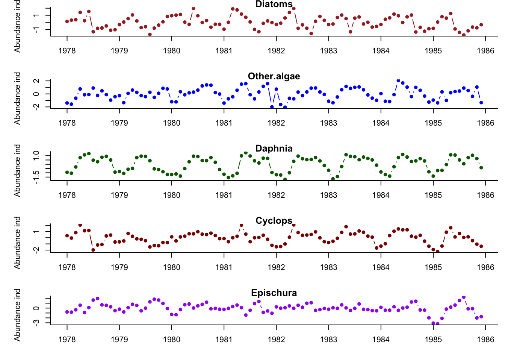
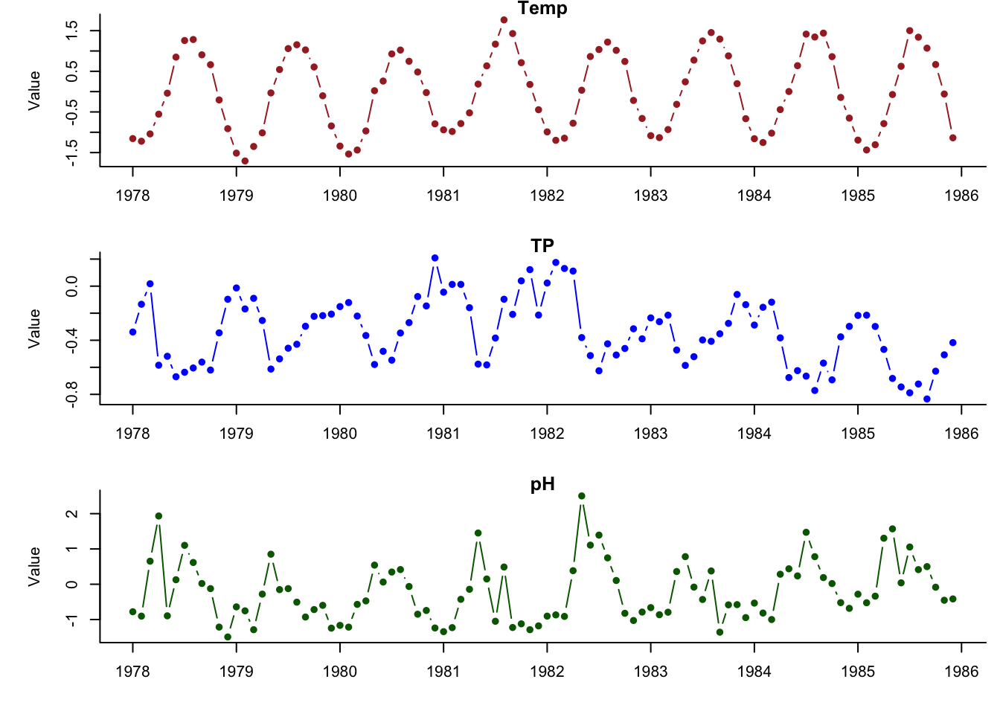
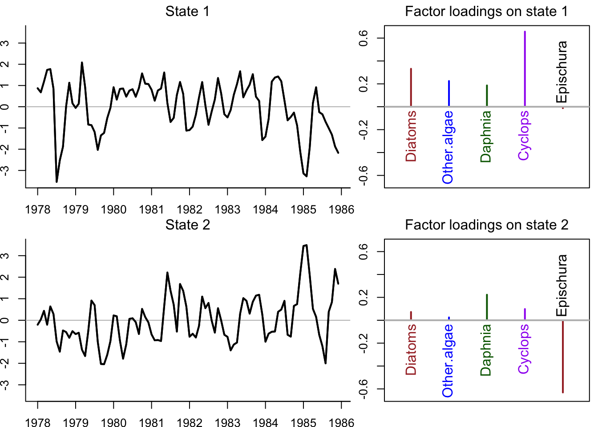
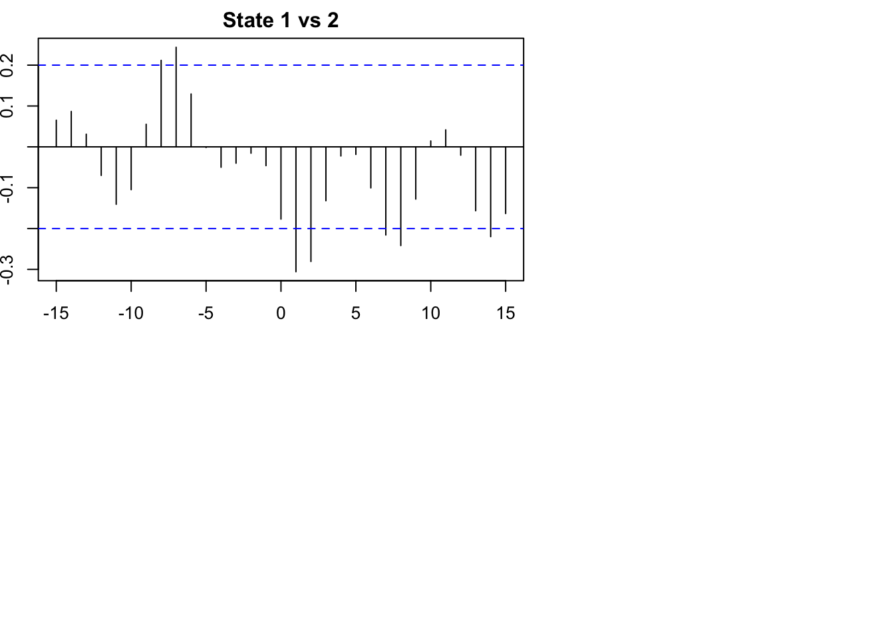
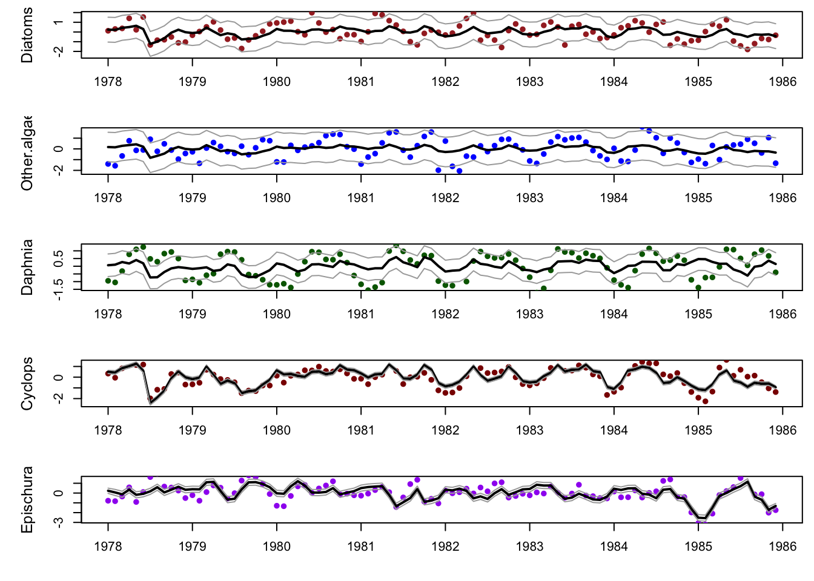
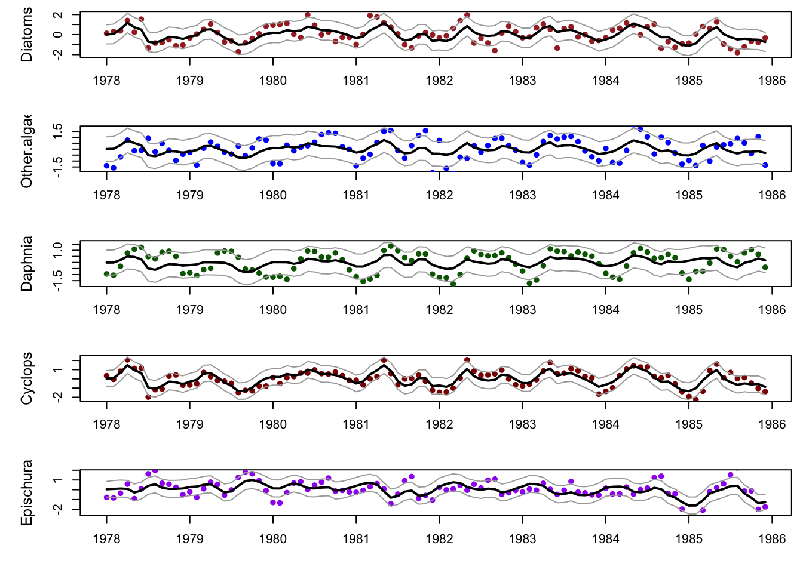

This lab focused on dynamic factor analysis, exploring plankton blooms in Lake Washington.
Data
Code
## load MARSS for data and analyseslibrary(tidyr)library(ggplot2)library(tidyverse)
── Attaching core tidyverse packages ──────────────────────── tidyverse 2.0.0 ──
✔ dplyr 1.1.2 ✔ readr 2.1.4
✔ forcats 1.0.0 ✔ stringr 1.5.0
✔ lubridate 1.9.2 ✔ tibble 3.2.1
✔ purrr 1.0.1
── Conflicts ────────────────────────────────────────── tidyverse_conflicts() ──
✖ dplyr::filter() masks stats::filter()
✖ dplyr::lag() masks stats::lag()
ℹ Use the conflicted package (<http://conflicted.r-lib.org/>) to force all conflicts to become errors
Code
library(dplyr)library(forecast)
Registered S3 method overwritten by 'quantmod':
method from
as.zoo.data.frame zoo
Code
library(MARSS)library(corrplot)
corrplot 0.92 loaded
Code
library(knitr)## load the raw data (there are 3 datasets contained here)data(lakeWAplankton, package ="MARSS")## we want `lakeWAplanktonTrans`, which has been transformed## so the 0's are replaced with NA's and the data z-scoredall_dat <- lakeWAplanktonTrans
Methods
Plankton Selection
Which plankton taxa did you choose and how did you choose them?
We selected two primary producers (Diatoms & Other Algae), two grazers (Daphnia & Cyclops), and one predator (Epischura). We wanted to consider potential interaction between species (primary producers, grazers, predators), and also select species that were data-rich for the majority of the time series.
Diatoms (Primary Producer) dominated in early spring time (Phytoplankton)
Other Algae (Primary Producer) –> Various algal species that grazers eat. Complete data set.
Daphnia (Grazer) –> Eat diatoms bloom after diatoms (zooplankton)
Epischura (Predator) –> Calanus Copepod, tend to peak after diatoms
What time period did you examine and why?
We are choosing years 1978 to 1985 since Daphnia data is more consistent after 1978 and we are able to capture an interesting trend in Total Phosphorus.
Wrangle the data
Code
## add some code hereyr_frst <-1978yr_last <-1985init_dat <- all_dat[all_dat[, "Year"] >= yr_frst & all_dat[, "Year"] <= yr_last,]# put the 5 response variables in the yt matrix, can be replace whenever# This represents multiple trophic levels# Primary prod: Diatoms & Other Algae# Grazers: Daphnia & Cyclops# Predators: Epischuraplank_taxa <-c("Diatoms","Other.algae","Daphnia","Cyclops","Epischura")dat <- init_dat[,plank_taxa] %>%t()## mean of each taxony_bar <-apply(dat, 1, mean, na.rm =TRUE)## subtract the meansplank_dat <- dat - y_bar## assign new column namesspp <-rownames(plank_dat)rownames(plank_dat) <- spp# create a covariates matrixcovnames <-c("Temp","TP","pH") #pH has missing data points so it will only work in certain date rangescovar <- init_dat[,covnames] %>%t()print(plank_dat[,1:5])
clr <-c("brown", "blue", "darkgreen", "darkred", "purple")## initialize a countercnt <-1## set up plotting space & make plotspar(mfrow =c(nrow(plank_dat), 1), mai =c(0.5, 0.7, 0.1, 0.1), omi =c(0, 0, 0, 0))mm =ncol(plank_dat)for(i in spp){plot(plank_dat[i,], bty ="L", xaxt ="n", pch =16,xlab ="",ylab ="Abundance index", col=clr[cnt], type="b")axis(1, 12* (0:mm) +1, yr_frst +0:mm)title(i) cnt <- cnt +1}

Code
## set plot colorsclr <-c("brown", "blue", "darkgreen","purple")## initialize a countercnt <-1## set up plotting space & make plotspar(mfrow =c(nrow(covar), 1), mai =c(0.5, 0.7, 0.1, 0.1), omi =c(0, 0, 0, 0))for(i inrow.names(covar)){plot(covar[i,], bty ="L", xaxt ="n", pch =16,xlab ="",ylab ="Value", col=clr[cnt], type="b")axis(1, 12* (0:mm) +1, yr_frst +0:mm)title(i) cnt <- cnt +1}

Initial Model Set-up
We examined models that considered three underlying state options: two, three, and four states. We also tested three observation error matrices, diagonal and equal, diagonal and unequal, and equal variance and covariance. We originally were going to include unconstrained but omitted it due to convergence issues. We wanted to explore assumptions for observation error given our uncertainty surrounding collection and counting methods for the data set. Finally, we considered all combinations of three possible covariates, temperature (Temp), total phosphorus (TP), and pH.
Code
model.states <-2:4names(model.states) <-c("two_states","three_states","four_states")# Also testing different observation error matricesR.models <-c("diagonal and unequal","equalvarcov", "diagonal and equal")# Also the covariates must be z-scored if the response variables are demeanedd.models <-list( # d1 = "zero", # No covariatesd2 =zscore(t(init_dat[,"Temp"])), # Temperatured3 =zscore(t(init_dat[,"TP"])), # Total Phosphorusd4 =zscore(t(init_dat[,"pH"])), # phd5 =zscore(t(init_dat[,c("Temp","TP")])),d6 =zscore(t(init_dat[,c("TP", "pH")])),d7 =zscore(t(init_dat[,c("Temp", "pH")])),d8 =zscore(t(init_dat[,c("Temp","TP", "pH")])) # Temperature and Total Phosphorus)names(d.models) <-c("Temp", "TP", "pH", "Temp and TP", "TP and pH", "Temp and pH", "Temp,TP, and pH")#Define Model List mod.list =list(A ="zero", # this is set to zero because the data has been demeanedQ ="identity", # Q is set to the default value, this can also be "diagonal and equal" or "diagonal and unequal"x0 ="zero"# x0 can be also be set to "unconstrained" or "unequal" it might be useful to try these later)#DFA form for mars model Q--reduces option to streamline run time# all other params are left to their default settings
We then set up for model runs for 63 model runs, looking at various combination of states, covariates (d) and observation error (R).
Code
# Added in another for loop to run through cycling options, be warned, this means there are 80 total models. It takes a long time to runstart.time <-Sys.time()out.tab <-NULLfits <-list()for(i in model.states){for (j in1:length(d.models)){for(R.model in R.models){ fit.model =c(list(m=i, R=R.model), mod.list)#MARSS will throw an error if covariates are not a matrix, This will not pass the covariate arg if it does not exist# if(j==1) {# fit <- MARSS(plank_dat, model=fit.model, # form = "dfa", z.score = FALSE, silent = TRUE,# control=list(maxit=2000, allow.degen=TRUE))# }# else { fit <-MARSS(plank_dat, model=fit.model, form ="dfa", z.score =FALSE, silent =TRUE,control=list(maxit=800, allow.degen =TRUE), covariates = d.models[[j]])# } out=data.frame(States=names(model.states)[i-1],d=names(d.models)[j],R=R.model, # logLik=fit$logLik, AICc=fit$AICc, num.param=fit$num.params,num.iter=fit$numIter, converged=!fit$convergence,stringsAsFactors =FALSE) out.tab=rbind(out.tab,out) fits=c(fits,list(fit)) } }}end.time <-Sys.time()elapsed.time <-round((end.time - start.time), 3)print(elapsed.time)
States d R logLik AICc
19 two_states Temp,TP, and pH diagonal and unequal -461.3723 984.6112
37 three_states Temp and pH diagonal and unequal -465.6312 988.6075
40 three_states Temp,TP, and pH diagonal and unequal -460.1504 989.0255
61 four_states Temp,TP, and pH diagonal and unequal -460.0915 993.5313
58 four_states Temp and pH diagonal and unequal -466.1926 994.2518
16 two_states Temp and pH diagonal and unequal -472.1331 994.9035
31 three_states Temp and TP diagonal and unequal -474.3998 1006.1448
22 three_states Temp diagonal and unequal -481.1397 1008.4938
10 two_states Temp and TP diagonal and unequal -479.6465 1009.9303
1 two_states Temp diagonal and unequal -485.3761 1010.4043
52 four_states Temp and TP diagonal and unequal -474.7942 1011.4550
43 four_states Temp diagonal and unequal -482.4445 1015.5264
20 two_states Temp,TP, and pH equalvarcov -482.1252 1019.3497
21 two_states Temp,TP, and pH diagonal and equal -483.8513 1020.5659
17 two_states Temp and pH equalvarcov -490.0328 1024.0831
18 two_states Temp and pH diagonal and equal -491.6144 1025.0589
41 three_states Temp,TP, and pH equalvarcov -482.1362 1026.1390
42 three_states Temp,TP, and pH diagonal and equal -483.8520 1027.3048
38 three_states Temp and pH equalvarcov -489.2019 1029.0411
39 three_states Temp and pH diagonal and equal -491.6753 1031.7717
59 four_states Temp and pH equalvarcov -489.2028 1033.5049
12 two_states Temp and TP diagonal and equal -498.8663 1039.5627
34 three_states TP and pH diagonal and unequal -491.2575 1039.8601
11 two_states Temp and TP equalvarcov -498.5663 1041.1501
33 three_states Temp and TP diagonal and equal -499.0256 1046.4723
28 three_states pH diagonal and unequal -500.6607 1047.5358
3 two_states Temp diagonal and equal -508.4297 1047.8940
32 three_states Temp and TP equalvarcov -498.6549 1047.9473
2 two_states Temp equalvarcov -507.6000 1048.3749
60 four_states Temp and pH diagonal and equal -497.8517 1048.5668
63 four_states Temp,TP, and pH diagonal and equal -492.2152 1048.5728
55 four_states TP and pH diagonal and unequal -493.7216 1049.3098
62 four_states Temp,TP, and pH equalvarcov -491.8611 1050.1507
23 three_states Temp equalvarcov -507.4046 1054.4613
24 three_states Temp diagonal and equal -508.5171 1054.5180
49 four_states pH diagonal and unequal -502.8687 1056.3748
25 three_states TP diagonal and unequal -506.7778 1059.7701
44 four_states Temp equalvarcov -508.3806 1060.7787
54 four_states Temp and TP diagonal and equal -506.1435 1065.1504
53 four_states Temp and TP equalvarcov -506.1030 1067.3054
46 four_states TP diagonal and unequal -509.9086 1070.4546
45 four_states Temp diagonal and equal -514.7653 1071.3606
13 two_states TP and pH diagonal and unequal -511.5294 1073.6961
7 two_states pH diagonal and unequal -520.8304 1081.3129
4 two_states TP diagonal and unequal -521.7079 1083.0680
35 three_states TP and pH equalvarcov -518.5049 1087.6471
36 three_states TP and pH diagonal and equal -520.2389 1088.8988
29 three_states pH equalvarcov -527.1656 1093.9834
30 three_states pH diagonal and equal -529.8045 1097.0927
56 four_states TP and pH equalvarcov -521.4913 1098.0819
57 four_states TP and pH diagonal and equal -522.7912 1098.4457
14 two_states TP and pH equalvarcov -529.8739 1103.7652
50 four_states pH equalvarcov -531.0839 1106.1852
51 four_states pH diagonal and equal -532.8581 1107.5463
27 three_states TP diagonal and equal -535.1172 1107.7182
15 two_states TP and pH diagonal and equal -533.4082 1108.6465
26 three_states TP equalvarcov -535.0348 1109.7218
48 four_states TP diagonal and equal -537.2049 1116.2399
47 four_states TP equalvarcov -536.8928 1117.8030
5 two_states TP equalvarcov -546.5152 1126.2053
6 two_states TP diagonal and equal -547.7638 1126.5620
8 two_states pH equalvarcov -548.6089 1130.3926
9 two_states pH diagonal and equal -555.0446 1141.1237
num.param num.iter converged
19 29 353 TRUE
37 27 800 FALSE
40 32 800 FALSE
61 34 425 TRUE
58 29 800 FALSE
16 24 800 FALSE
31 27 313 TRUE
22 22 800 FALSE
10 24 110 TRUE
1 19 800 FALSE
52 29 800 FALSE
43 24 800 FALSE
20 26 694 TRUE
21 25 77 TRUE
17 21 613 TRUE
18 20 56 TRUE
41 29 582 TRUE
42 28 117 TRUE
38 24 800 FALSE
39 23 106 TRUE
59 26 800 FALSE
12 20 72 TRUE
34 27 800 FALSE
11 21 455 TRUE
33 23 102 TRUE
28 22 800 FALSE
3 15 62 TRUE
32 24 557 TRUE
2 16 559 TRUE
60 25 81 TRUE
63 30 84 TRUE
55 29 800 FALSE
62 31 800 FALSE
23 19 800 FALSE
24 18 91 TRUE
49 24 800 FALSE
25 22 800 FALSE
44 21 800 FALSE
54 25 86 TRUE
53 26 800 FALSE
46 24 800 FALSE
45 20 83 TRUE
13 24 800 FALSE
7 19 800 FALSE
4 19 800 FALSE
35 24 530 TRUE
36 23 75 TRUE
29 19 800 FALSE
30 18 78 TRUE
56 26 673 TRUE
57 25 87 TRUE
14 21 434 TRUE
50 21 452 TRUE
51 20 800 FALSE
27 18 68 TRUE
15 20 48 TRUE
26 19 418 TRUE
48 20 93 TRUE
47 21 428 TRUE
5 16 559 TRUE
6 15 52 TRUE
8 16 800 FALSE
9 15 58 TRUE
Initial Results
The time for all models to fit was approximately 40 min, and the model that has the least AICc is the model with two states, diagonal and unequal errors and all 3 covariates. Many of the models did not converge, which could have been due to data being inconsistent with our model assumptions, insufficient data (we selected a data rich time period, so I’m not sure about this one), or not enough number of iterations for fitting. (MARSS Manual, Chapter 10).
Matrix for best fit model
What forms of models did you fit (ie, write them out in matrix form)?
# Rotating the model, plotting the states and loadingsbest_fit <- fits[[19]]# Get Z Estimations and rotate the data## get the estimated ZZZ_est <-coef(best_fit, type ="matrix")$Z## get the inverse of the rotation matrixH_inv <-varimax(Z_est)$rotmat## rotate factor loadingsZ_rot = Z_est %*% H_inv ## rotate processesproc_rot =solve(H_inv) %*% best_fit$statesN_ts <-nrow(plank_dat)m =ncol(Z_est)## plot labelsylbl <- plank_taxaw_ts <-seq(mm)## set up plot arealayout(matrix(1:4, m, 2), widths =c(3,2))par(mai =c(0.3, 0.3, 0.3, 0.1), omi =c(0, 0, 0, 0))## plot the processesfor(i in1:m) { ylm <-c(-1, 1) *max(abs(proc_rot[i,]))## set up plot areaplot(w_ts,proc_rot[i,], type ="n", bty ="L",ylim = ylm, xlab ="", ylab ="", xaxt ="n")## draw zero-lineabline(h =0, col ="gray")## plot trend linelines(w_ts, proc_rot[i,], lwd =2)lines(w_ts, proc_rot[i,], lwd =2)## add panel labelsmtext(paste("State",i), side =3, line =0.5)axis(1, 12* (0:mm) +1, yr_frst +0:mm)}## plot the loadingsminZ <-0ylm <-c(-1, 1) *max(abs(Z_rot))for(i in1:m) {plot(x =c(1:N_ts)[abs(Z_rot[,i])>minZ],y =as.vector(Z_rot[abs(Z_rot[,i])>minZ,i]),type ="h",lwd =2, xlab ="", ylab ="", xaxt ="n", ylim = ylm,xlim =c(0.5, N_ts +0.5), col = clr)for(j in1:N_ts) {if(Z_rot[j,i] > minZ) {text(j, -0.03, ylbl[j], srt =90, adj =1, cex =1.2, col = clr[j])}if(Z_rot[j,i] <-minZ) {text(j, 0.03, ylbl[j], srt =90, adj =0, cex =1.2, col = clr[j])}abline(h =0, lwd =1.5, col ="gray") } mtext(paste("Factor loadings on state", i), side =3, line =0.5)}

Code
## plot CCF'sccf(proc_rot[1,],proc_rot[2,], lag.max =15, main="")title(main ="State 1 vs 2")

This model seems to explain primary producer and grazer dynamics best in state 1, and predator dynamics best in state two. Epischura has a strong negative trend in state two, compared to other species which are all postive in both states 1 and 2.
Code
autoplot(best_fit)
plot.type = xtT
Hit <Return> to see next plot (q to exit):
plot.type = fitted.ytT
Hit <Return> to see next plot (q to exit):
plot.type = model.resids.ytt1
Hit <Return> to see next plot (q to exit):
plot.type = std.model.resids.ytT
Hit <Return> to see next plot (q to exit):
plot.type = std.state.resids.xtT
Hit <Return> to see next plot (q to exit):
plot.type = qqplot.std.model.resids.ytt1
Hit <Return> to see next plot (q to exit):
plot.type = qqplot.std.state.resids.xtT
Hit <Return> to see next plot (q to exit):
plot.type = acf.std.model.resids.ytt1
Finished plots.
The diagnostic plots show relatively good fits for three of the species, but “other algae” and diatoms aren’t being captured as the model is missing the full range of data. There may be some structure to the residuals for diatoms and maybe cyclops with few outliers, but all species and states show normality in the QQ plots.
Model Fits
Code
get_DFA_fits <-function(MLEobj, dd =NULL, alpha =0.05) {## empty list for results fits <-list()## extra stuff for var() calcs Ey <- MARSS:::MARSShatyt(MLEobj)## model params ZZ <-coef(MLEobj, type ="matrix")$Z## number of obs ts nn <-dim(Ey$ytT)[1]## number of time steps TT <-dim(Ey$ytT)[2]## get the inverse of the rotation matrix H_inv <-varimax(ZZ)$rotmat## check for covarsif (!is.null(dd)) { DD <-coef(MLEobj, type ="matrix")$D## model expectation fits$ex <- ZZ %*% H_inv %*% MLEobj$states + DD %*% dd } else {## model expectation fits$ex <- ZZ %*% H_inv %*% MLEobj$states }## Var in model fits VtT <-MARSSkfss(MLEobj)$VtT VV <-NULLfor (tt in1:TT) { RZVZ <-coef(MLEobj, type ="matrix")$R - ZZ %*% VtT[, , tt] %*%t(ZZ) SS <- Ey$yxtT[, , tt] - Ey$ytT[, tt, drop =FALSE] %*%t(MLEobj$states[, tt, drop =FALSE]) VV <-cbind(VV, diag(RZVZ + SS %*%t(ZZ) + ZZ %*%t(SS))) } SE <-sqrt(VV)## upper & lower (1-alpha)% CI fits$up <-qnorm(1- alpha/2) * SE + fits$ex fits$lo <-qnorm(alpha/2) * SE + fits$exreturn(fits)}clr <-c("brown", "blue", "darkgreen", "darkred", "purple")N_ts <-dim(plank_dat)[1]w_ts <-seq(dim(plank_dat)[2])## get model fits & CI'smod_fit <-get_DFA_fits(best_fit)## plot the fitsylbl <- plank_taxapar(mfrow =c(N_ts, 1), mai =c(0.5, 0.7, 0.1, 0.1), omi =c(0, 0, 0, 0))for (i in1:N_ts) { up <- mod_fit$up[i, ] mn <- mod_fit$ex[i, ] lo <- mod_fit$lo[i, ]plot(w_ts, mn, xlab ="", ylab = ylbl[i], xaxt ="n", type ="n", cex.lab =1.2, ylim =c(min(lo), max(up)))axis(1, 12* (0:dim(plank_dat)[2]) +1, yr_frst +0:dim(plank_dat)[2])points(w_ts, plank_dat[i, ], pch =16, col = clr[i])lines(w_ts, up, col ="darkgray")lines(w_ts, mn, col ="black", lwd =2)lines(w_ts, lo, col ="darkgray")}

These fits seem to be missing a lot of the interannual peaks and valleys for daphnia and the confidence intervals for cyclops and epischura are very tight and missing data. We may be able to find a better fitting model with seasonal considerations.
Seasonal Model Exploration
Describe the effects of environmental or dummy variables on (possibly seasonal) patterns in the data.
Seasonal Model Set-up
We decided to look at three seasonal patterns, an annual pattern (12 months), a six month pattern, and a 3 month pattern (Winter, Spring, Summer, Fall).
Code
TT <-dim(plank_dat)[2]fits_season <-list()out.tab.season <-NULLmodel.states <-1names(model.states) <-c("two_states")R.models <-c("diagonal and unequal")# 12 month period cos.12<-cos(2* pi *seq(TT)/12) sin.12<-sin(2* pi *seq(TT)/12) c.Four_12 <-rbind(cos.12, sin.12)# 6 month period cos.6<-cos(2* pi *seq(TT)/6) sin.6<-sin(2* pi *seq(TT)/6) c.Four_6 <-rbind(cos.6, sin.6)# 3 month period cos.3<-cos(2* pi *seq(TT)/3) sin.3<-sin(2* pi *seq(TT)/3) c.Four_3 <-rbind(cos.3, sin.3) d10 =zscore(t(init_dat[,c("Temp","TP", "pH")])) d12 =rbind(c.Four_12, d10) d6 =rbind(c.Four_6, d10) d3 =rbind(c.Four_3, d10) d.models <-list(d10, d12, d6, d3)names(d.models) <-c("Temp,TP, and pH", "12 month", "6 month", "3 month") mod.list =list(A ="zero",Q ="identity",x0 ="zero" ) start.time <-Sys.time()for (j in1:length(d.models)){for(R.model in R.models){ fit.model =c(list(m=i, R=R.model), mod.list) fit <-MARSS(plank_dat, model=fit.model, form ="dfa", z.score =FALSE, silent =TRUE,control=list(maxit=800, allow.degen=TRUE), covariates = d.models[[j]]) out=data.frame(States=names(model.states)[i-1],d=names(d.models)[j],R=R.model, # logLik=fit$logLik, AICc=fit$AICc, num.param=fit$num.params,num.iter=fit$numIter, converged=!fit$convergence,stringsAsFactors =FALSE) out.tab.season=rbind(out.tab.season,out) fits_season=c(fits,list(fit)) } } end.time <-Sys.time() elapsed.time <-round((end.time - start.time), 3)print(paste("Elapsed time for period:", elapsed.time))
States d R logLik AICc num.param
3 <NA> 6 month diagonal and unequal -419.3891 938.3174 45
2 <NA> 12 month diagonal and unequal -447.2196 993.9783 45
1 <NA> Temp,TP, and pH diagonal and unequal -460.1765 996.0288 35
4 <NA> 3 month diagonal and unequal -459.1695 1017.8782 45
num.iter converged
3 406 TRUE
2 800 FALSE
1 800 FALSE
4 800 FALSE
Seasonal Results
When comparing our previous best model,a two state model with diagonal and unequal observation error with covariates temperature, total phosphorous, and pH, to a model with the same assumptions but adding in seasonal considerations, both 12 month periods and 6 month periods performed better than the non-seasonal model. The model with the 6 month period performed the best by a significant margin. We explore the diagnostics and model fits below.
# Rotating the model, plotting the states and loadingsbest_fit_s <- fits_season[[3]]# Get Z Estimations and rotate the data## get the estimated ZZZ_est_s <-coef(best_fit_s, type ="matrix")$Z## get the inverse of the rotation matrixH_inv_s <-varimax(Z_est_s)$rotmat## rotate factor loadingsZ_rot_s = Z_est_s %*% H_inv_s ## rotate processesproc_rot_s =solve(H_inv_s) %*% best_fit_s$statesN_ts <-nrow(plank_dat)m =ncol(Z_est)## plot labelsylbl <- plank_taxaw_ts <-seq(mm)## set up plot arealayout(matrix(1:4, m, 2), widths =c(3,2))par(mai =c(0.3, 0.3, 0.3, 0.1), omi =c(0, 0, 0, 0))## plot the processesfor(i in1:m) { ylm <-c(-1, 1) *max(abs(proc_rot_s[i,]))## set up plot areaplot(w_ts,proc_rot_s[i,], type ="n", bty ="L",ylim = ylm, xlab ="", ylab ="", xaxt ="n")## draw zero-lineabline(h =0, col ="gray")## plot trend linelines(w_ts, proc_rot_s[i,], lwd =2)lines(w_ts, proc_rot_s[i,], lwd =2)## add panel labelsmtext(paste("State",i), side =3, line =0.5)axis(1, 12* (0:mm) +1, yr_frst +0:mm)}## plot the loadingsminZ <-0ylm <-c(-1, 1) *max(abs(Z_rot_s))for(i in1:m) {plot(x =c(1:N_ts)[abs(Z_rot_s[,i])>minZ],y =as.vector(Z_rot_s[abs(Z_rot_s[,i])>minZ,i]),type ="h",lwd =2, xlab ="", ylab ="", xaxt ="n", ylim = ylm,xlim =c(0.5, N_ts +0.5), col = clr)for(j in1:N_ts) {if(Z_rot_s[j,i] > minZ) {text(j, -0.03, ylbl[j], srt =90, adj =1, cex =1.2, col = clr[j])}if(Z_rot_s[j,i] <-minZ) {text(j, 0.03, ylbl[j], srt =90, adj =0, cex =1.2, col = clr[j])}abline(h =0, lwd =1.5, col ="gray") } mtext(paste("Factor loadings on state with seasonality", i), side =3, line =0.5)}
Code
## plot CCF'sccf(proc_rot_s[1,],proc_rot_s[2,], lag.max =15, main="")title(main ="State 1 vs 2 with seasonality")
The factor loading seen in the model that is including seasonality seems to explain the dynamics of the speices better than the model that did not include seasonality, however, the sign of factor loading for Epishura, our predator species, changed to become positive in the seasonal model.
Factor loadings: * Pattern for primary producers and grazers is better explained by state one * Pattern for predator species is better explained by state two
CCF plot indicates that there is still some seasonal mechanism occurring that our model is not capturing.
Additional Diagnostic
Code
autoplot(best_fit_s)
plot.type = xtT
Hit <Return> to see next plot (q to exit):
plot.type = fitted.ytT
Hit <Return> to see next plot (q to exit):
plot.type = model.resids.ytt1
Hit <Return> to see next plot (q to exit):
plot.type = std.model.resids.ytT
Hit <Return> to see next plot (q to exit):
plot.type = std.state.resids.xtT
Hit <Return> to see next plot (q to exit):
plot.type = qqplot.std.model.resids.ytt1
Hit <Return> to see next plot (q to exit):
plot.type = qqplot.std.state.resids.xtT
Hit <Return> to see next plot (q to exit):
plot.type = acf.std.model.resids.ytt1
Finished plots.
This model is fitting the species better overall compared to the non-seaosnal model. Residuals and assumptions of normality look good overall. Daphnia still show some seasonal pattern not being captured in this model in the Cholesky residuals.
Model Fits
Code
clr <-c("brown", "blue", "darkgreen", "darkred", "purple")N_ts <-dim(plank_dat)[1]w_ts <-seq(dim(plank_dat)[2])## get model fits & CI'smod_fit_s <-get_DFA_fits(best_fit_s)## plot the fitsylbl <- plank_taxapar(mfrow =c(N_ts, 1), mai =c(0.5, 0.7, 0.1, 0.1), omi =c(0, 0, 0, 0))for (i in1:N_ts) { up <- mod_fit_s$up[i, ] mn <- mod_fit_s$ex[i, ] lo <- mod_fit_s$lo[i, ]plot(w_ts, mn, xlab ="", ylab = ylbl[i], xaxt ="n", type ="n", cex.lab =1.2, ylim =c(min(lo), max(up)))axis(1, 12* (0:dim(plank_dat)[2]) +1, yr_frst +0:dim(plank_dat)[2])points(w_ts, plank_dat[i, ], pch =16, col = clr[i])lines(w_ts, up, col ="darkgray")lines(w_ts, mn, col ="black", lwd =2)lines(w_ts, lo, col ="darkgray")}

Still not fitting other algae and daphina particularly well, but the model is trying to follow the trends and most of the data are captured within the confidence intervals. The confidence intervals are larger for cyclops and epishura compared to the non-seasonal model and more of the data are being captured.
Discussion
In this exercise our goal was to capturing the dynamics of predator and prey species in Lake Washington in the late 70’s and early 80’s.
Seasonal model (six month period) fit better and the factor loading results showed more of a deviance between state one and state two for primary producers and grazers, and predators.
All three environmental covariates were included in the best fit model, showing that they are explaning levels of variability for the selected species in the selected time period.
Epishura seem to have an offset from the other species. We’re fitting two independent states to five species, and while one state captured the dynamics of grazers and primary producers relatively well, epishura was not captured at all in this state, indicating independence between these two groups of plankton in the time period analyzed.
All three environmental covariates were included in the best fit model, showing that they are explaning levels of variability for the selected species in the selected time period.
Team contributions
Madi set up plotting code for the entire time series for all species to select species of interest in data rich periods.
Eric wrote the majority of the model set up code and created functions used for plotting.
Maria took the code that Eric wrote, optimized it for our covariate process, and helped with convergence issues, and set up the initial model that included seasonal considerations.
Madi took the Maria’s code and edited to include seasonal considerations for three periods, added commentary for diagnostics, and set-up the Rmarkdown structure and coded the model matrices.
All team members helped with defining the matrices for the selected models, interpretation of results, and writing of the report.
Source Code
---title: "Team 2 - Lab 3"subtitle: "Dynamic Factor Analysis (DFA)"author: "Eric, Madison, Maria"date: April 20, 2023output: html_document: code-folding: true toc: true toc_float: trueeditor_options: markdown: wrap: 72---```{r setup, include = FALSE}options(dplyr.summarise.inform =FALSE)```------------------------------------------------------------------------# IntroductionThis lab focused on dynamic factor analysis, exploring plankton bloomsin Lake Washington.# Data```{r load_data}## load MARSS for data and analyseslibrary(tidyr)library(ggplot2)library(tidyverse)library(dplyr)library(forecast)library(MARSS)library(corrplot)library(knitr)## load the raw data (there are 3 datasets contained here)data(lakeWAplankton, package ="MARSS")## we want `lakeWAplanktonTrans`, which has been transformed## so the 0's are replaced with NA's and the data z-scoredall_dat <- lakeWAplanktonTrans```# Methods## Plankton Selection**Which plankton taxa did you choose and how did you choose them?**We selected two primary producers (Diatoms & Other Algae), two grazers(Daphnia & Cyclops), and one predator (Epischura). We wanted to considerpotential interaction between species (primary producers, grazers,predators), and also select species that were data-rich for the majorityof the time series.- *Diatoms* (Primary Producer) dominated in early spring time (Phytoplankton)- *Other Algae* (Primary Producer) --\> Various algal species that grazers eat. Complete data set.- *Daphnia* (Grazer) --\> Eat diatoms bloom after diatoms (zooplankton)- *Cyclops* (Grazer) --\> Grazer taxa, eat phytoplankton- *Epischura* (Predator) --\> Calanus Copepod, tend to peak after diatoms**What time period did you examine and why?**We are choosing years 1978 to 1985 since Daphnia data is more consistentafter 1978 and we are able to capture an interesting trend in TotalPhosphorus.## Wrangle the data```{r wrangle_data}## add some code hereyr_frst <-1978yr_last <-1985init_dat <- all_dat[all_dat[, "Year"] >= yr_frst & all_dat[, "Year"] <= yr_last,]# put the 5 response variables in the yt matrix, can be replace whenever# This represents multiple trophic levels# Primary prod: Diatoms & Other Algae# Grazers: Daphnia & Cyclops# Predators: Epischuraplank_taxa <-c("Diatoms","Other.algae","Daphnia","Cyclops","Epischura")dat <- init_dat[,plank_taxa] %>%t()## mean of each taxony_bar <-apply(dat, 1, mean, na.rm =TRUE)## subtract the meansplank_dat <- dat - y_bar## assign new column namesspp <-rownames(plank_dat)rownames(plank_dat) <- spp# create a covariates matrixcovnames <-c("Temp","TP","pH") #pH has missing data points so it will only work in certain date rangescovar <- init_dat[,covnames] %>%t()print(plank_dat[,1:5])print(covar[,1:5])``````{r plot_data}clr <-c("brown", "blue", "darkgreen", "darkred", "purple")## initialize a countercnt <-1## set up plotting space & make plotspar(mfrow =c(nrow(plank_dat), 1), mai =c(0.5, 0.7, 0.1, 0.1), omi =c(0, 0, 0, 0))mm =ncol(plank_dat)for(i in spp){plot(plank_dat[i,], bty ="L", xaxt ="n", pch =16,xlab ="",ylab ="Abundance index", col=clr[cnt], type="b")axis(1, 12* (0:mm) +1, yr_frst +0:mm)title(i) cnt <- cnt +1}## set plot colorsclr <-c("brown", "blue", "darkgreen","purple")## initialize a countercnt <-1## set up plotting space & make plotspar(mfrow =c(nrow(covar), 1), mai =c(0.5, 0.7, 0.1, 0.1), omi =c(0, 0, 0, 0))for(i inrow.names(covar)){plot(covar[i,], bty ="L", xaxt ="n", pch =16,xlab ="",ylab ="Value", col=clr[cnt], type="b")axis(1, 12* (0:mm) +1, yr_frst +0:mm)title(i) cnt <- cnt +1}```## Initial Model Set-upWe examined models that considered three underlying state options: two,three, and four states. We also tested three observation error matrices,diagonal and equal, diagonal and unequal, and equal variance andcovariance. We originally were going to include unconstrained butomitted it due to convergence issues. We wanted to explore assumptionsfor observation error given our uncertainty surrounding collection andcounting methods for the data set. Finally, we considered allcombinations of three possible covariates, temperature (Temp), totalphosphorus (TP), and pH.```{r model_params}model.states <-2:4names(model.states) <-c("two_states","three_states","four_states")# Also testing different observation error matricesR.models <-c("diagonal and unequal","equalvarcov", "diagonal and equal")# Also the covariates must be z-scored if the response variables are demeanedd.models <-list( # d1 = "zero", # No covariatesd2 =zscore(t(init_dat[,"Temp"])), # Temperatured3 =zscore(t(init_dat[,"TP"])), # Total Phosphorusd4 =zscore(t(init_dat[,"pH"])), # phd5 =zscore(t(init_dat[,c("Temp","TP")])),d6 =zscore(t(init_dat[,c("TP", "pH")])),d7 =zscore(t(init_dat[,c("Temp", "pH")])),d8 =zscore(t(init_dat[,c("Temp","TP", "pH")])) # Temperature and Total Phosphorus)names(d.models) <-c("Temp", "TP", "pH", "Temp and TP", "TP and pH", "Temp and pH", "Temp,TP, and pH")#Define Model List mod.list =list(A ="zero", # this is set to zero because the data has been demeanedQ ="identity", # Q is set to the default value, this can also be "diagonal and equal" or "diagonal and unequal"x0 ="zero"# x0 can be also be set to "unconstrained" or "unequal" it might be useful to try these later)#DFA form for mars model Q--reduces option to streamline run time# all other params are left to their default settings```We then set up for model runs for 63 model runs, looking at variouscombination of states, covariates (d) and observation error (R).```{r MARSS_models, cache = TRUE}# Added in another for loop to run through cycling options, be warned, this means there are 80 total models. It takes a long time to runstart.time <-Sys.time()out.tab <-NULLfits <-list()for(i in model.states){for (j in1:length(d.models)){for(R.model in R.models){ fit.model =c(list(m=i, R=R.model), mod.list)#MARSS will throw an error if covariates are not a matrix, This will not pass the covariate arg if it does not exist# if(j==1) {# fit <- MARSS(plank_dat, model=fit.model, # form = "dfa", z.score = FALSE, silent = TRUE,# control=list(maxit=2000, allow.degen=TRUE))# }# else { fit <-MARSS(plank_dat, model=fit.model, form ="dfa", z.score =FALSE, silent =TRUE,control=list(maxit=800, allow.degen =TRUE), covariates = d.models[[j]])# } out=data.frame(States=names(model.states)[i-1],d=names(d.models)[j],R=R.model, # logLik=fit$logLik, AICc=fit$AICc, num.param=fit$num.params,num.iter=fit$numIter, converged=!fit$convergence,stringsAsFactors =FALSE) out.tab=rbind(out.tab,out) fits=c(fits,list(fit)) } }}end.time <-Sys.time()elapsed.time <-round((end.time - start.time), 3)print(elapsed.time)min.AICc <-order(out.tab$AICc)out.tab.1<- out.tab[min.AICc, ]out.tab.1```# Initial ResultsThe time for all models to fit was approximately 40 min, and the modelthat has the least AICc is the model with two states, diagonal andunequal errors and all 3 covariates. Many of the models did notconverge, which could have been due to data being inconsistent with ourmodel assumptions, insufficient data (we selected a data rich timeperiod, so I'm not sure about this one), or not enough number ofiterations for fitting. (MARSS Manual, Chapter 10).### Matrix for best fit modelWhat forms of models did you fit (ie, write them out in matrix form)?$$\begin{bmatrix}y_1\\y_2\\y_3\\y_4\\y_5\\\end{bmatrix}_t=\begin{bmatrix}z_{1,1} & z_{1,2}\\z_{2,1} & z_{2,2}\\z_{3,1} & z_{3,2}\\z_{4,1} & z_{4,2}\\z_{5,1} & z_{5,2}\\\end{bmatrix}*\begin{bmatrix}x_1\\x_2\\\end{bmatrix}_t+\begin{bmatrix}d_{1,1} & d_{1,2} & d_{1,3}\\d_{2,1} & d_{2,2} & d_{2,3}\\d_{3,1} & d_{3,2} & d_{3,3}\\d_{4,1} & d_{4,2} & d_{4,3}\\d_{5,1} & d_{5,2} & d_{5,3}\\\end{bmatrix}* \begin{bmatrix}Temp \\TP \\pH\\\end{bmatrix}_t+\begin{bmatrix}v_1\\v_2\\v_3\\v_4\\v_5\end{bmatrix}_t$$$$\begin{bmatrix}x_1\\x_2\\\end{bmatrix}_t=\begin{bmatrix}1 & 0\\0 & 1\\\end{bmatrix}\begin{bmatrix}x_1\\x_2\\\end{bmatrix}_{t-1}+\begin{bmatrix}w_1\\w_2\\\end{bmatrix}_t$$Process Error$$\begin{bmatrix}w_1\\w_2\\\end{bmatrix}\sim MVN\begin{pmatrix}\begin{bmatrix}0\\0\\\end{bmatrix},\begin{bmatrix}1 & 0\\0 & 1\\\end{bmatrix}\end{pmatrix}$$Observation Error $$ \begin{bmatrix}v_1\\v_2\\v_3\\v_4\\v_5\\\end{bmatrix}\sim MVN\begin{pmatrix}\begin{bmatrix}0\\0\\0\\0\\0\\\end{bmatrix},\begin{bmatrix}r_1 & 0& 0& 0& 0\\0 & r_2& 0& 0& 0\\0 & 0& r_3& 0& 0\\0 & 0& 0& r_4& 0\\0 & 0& 0& 0& r_5\\\end{bmatrix}\end{pmatrix}$$## Diagnostics```{r factor_loadings}# Rotating the model, plotting the states and loadingsbest_fit <- fits[[19]]# Get Z Estimations and rotate the data## get the estimated ZZZ_est <-coef(best_fit, type ="matrix")$Z## get the inverse of the rotation matrixH_inv <-varimax(Z_est)$rotmat## rotate factor loadingsZ_rot = Z_est %*% H_inv ## rotate processesproc_rot =solve(H_inv) %*% best_fit$statesN_ts <-nrow(plank_dat)m =ncol(Z_est)## plot labelsylbl <- plank_taxaw_ts <-seq(mm)## set up plot arealayout(matrix(1:4, m, 2), widths =c(3,2))par(mai =c(0.3, 0.3, 0.3, 0.1), omi =c(0, 0, 0, 0))## plot the processesfor(i in1:m) { ylm <-c(-1, 1) *max(abs(proc_rot[i,]))## set up plot areaplot(w_ts,proc_rot[i,], type ="n", bty ="L",ylim = ylm, xlab ="", ylab ="", xaxt ="n")## draw zero-lineabline(h =0, col ="gray")## plot trend linelines(w_ts, proc_rot[i,], lwd =2)lines(w_ts, proc_rot[i,], lwd =2)## add panel labelsmtext(paste("State",i), side =3, line =0.5)axis(1, 12* (0:mm) +1, yr_frst +0:mm)}## plot the loadingsminZ <-0ylm <-c(-1, 1) *max(abs(Z_rot))for(i in1:m) {plot(x =c(1:N_ts)[abs(Z_rot[,i])>minZ],y =as.vector(Z_rot[abs(Z_rot[,i])>minZ,i]),type ="h",lwd =2, xlab ="", ylab ="", xaxt ="n", ylim = ylm,xlim =c(0.5, N_ts +0.5), col = clr)for(j in1:N_ts) {if(Z_rot[j,i] > minZ) {text(j, -0.03, ylbl[j], srt =90, adj =1, cex =1.2, col = clr[j])}if(Z_rot[j,i] <-minZ) {text(j, 0.03, ylbl[j], srt =90, adj =0, cex =1.2, col = clr[j])}abline(h =0, lwd =1.5, col ="gray") } mtext(paste("Factor loadings on state", i), side =3, line =0.5)}## plot CCF'sccf(proc_rot[1,],proc_rot[2,], lag.max =15, main="")title(main ="State 1 vs 2")```This model seems to explain primary producer and grazer dynamics best instate 1, and predator dynamics best in state two. Epischura has a strongnegative trend in state two, compared to other species which are allpostive in both states 1 and 2.```{r Continued Diagnostics}autoplot(best_fit) ```The diagnostic plots show relatively good fits for three of the species,but "other algae" and diatoms aren't being captured as the model ismissing the full range of data. There may be some structure to theresiduals for diatoms and maybe cyclops with few outliers, but allspecies and states show normality in the QQ plots.### Model Fits```{r}get_DFA_fits <-function(MLEobj, dd =NULL, alpha =0.05) {## empty list for results fits <-list()## extra stuff for var() calcs Ey <- MARSS:::MARSShatyt(MLEobj)## model params ZZ <-coef(MLEobj, type ="matrix")$Z## number of obs ts nn <-dim(Ey$ytT)[1]## number of time steps TT <-dim(Ey$ytT)[2]## get the inverse of the rotation matrix H_inv <-varimax(ZZ)$rotmat## check for covarsif (!is.null(dd)) { DD <-coef(MLEobj, type ="matrix")$D## model expectation fits$ex <- ZZ %*% H_inv %*% MLEobj$states + DD %*% dd } else {## model expectation fits$ex <- ZZ %*% H_inv %*% MLEobj$states }## Var in model fits VtT <-MARSSkfss(MLEobj)$VtT VV <-NULLfor (tt in1:TT) { RZVZ <-coef(MLEobj, type ="matrix")$R - ZZ %*% VtT[, , tt] %*%t(ZZ) SS <- Ey$yxtT[, , tt] - Ey$ytT[, tt, drop =FALSE] %*%t(MLEobj$states[, tt, drop =FALSE]) VV <-cbind(VV, diag(RZVZ + SS %*%t(ZZ) + ZZ %*%t(SS))) } SE <-sqrt(VV)## upper & lower (1-alpha)% CI fits$up <-qnorm(1- alpha/2) * SE + fits$ex fits$lo <-qnorm(alpha/2) * SE + fits$exreturn(fits)}clr <-c("brown", "blue", "darkgreen", "darkred", "purple")N_ts <-dim(plank_dat)[1]w_ts <-seq(dim(plank_dat)[2])## get model fits & CI'smod_fit <-get_DFA_fits(best_fit)## plot the fitsylbl <- plank_taxapar(mfrow =c(N_ts, 1), mai =c(0.5, 0.7, 0.1, 0.1), omi =c(0, 0, 0, 0))for (i in1:N_ts) { up <- mod_fit$up[i, ] mn <- mod_fit$ex[i, ] lo <- mod_fit$lo[i, ]plot(w_ts, mn, xlab ="", ylab = ylbl[i], xaxt ="n", type ="n", cex.lab =1.2, ylim =c(min(lo), max(up)))axis(1, 12* (0:dim(plank_dat)[2]) +1, yr_frst +0:dim(plank_dat)[2])points(w_ts, plank_dat[i, ], pch =16, col = clr[i])lines(w_ts, up, col ="darkgray")lines(w_ts, mn, col ="black", lwd =2)lines(w_ts, lo, col ="darkgray")}```These fits seem to be missing a lot of the interannual peaks and valleysfor daphnia and the confidence intervals for cyclops and epischura arevery tight and missing data. We may be able to find a better fittingmodel with seasonal considerations.# Seasonal Model Exploration**Describe the effects of environmental or dummy variables on (possiblyseasonal) patterns in the data.**## Seasonal Model Set-upWe decided to look at three seasonal patterns, an annual pattern (12months), a six month pattern, and a 3 month pattern (Winter, Spring,Summer, Fall).```{r Seasonal exploration, cache = TRUE}TT <-dim(plank_dat)[2]fits_season <-list()out.tab.season <-NULLmodel.states <-1names(model.states) <-c("two_states")R.models <-c("diagonal and unequal")# 12 month period cos.12<-cos(2* pi *seq(TT)/12) sin.12<-sin(2* pi *seq(TT)/12) c.Four_12 <-rbind(cos.12, sin.12)# 6 month period cos.6<-cos(2* pi *seq(TT)/6) sin.6<-sin(2* pi *seq(TT)/6) c.Four_6 <-rbind(cos.6, sin.6)# 3 month period cos.3<-cos(2* pi *seq(TT)/3) sin.3<-sin(2* pi *seq(TT)/3) c.Four_3 <-rbind(cos.3, sin.3) d10 =zscore(t(init_dat[,c("Temp","TP", "pH")])) d12 =rbind(c.Four_12, d10) d6 =rbind(c.Four_6, d10) d3 =rbind(c.Four_3, d10) d.models <-list(d10, d12, d6, d3)names(d.models) <-c("Temp,TP, and pH", "12 month", "6 month", "3 month") mod.list =list(A ="zero",Q ="identity",x0 ="zero" ) start.time <-Sys.time()for (j in1:length(d.models)){for(R.model in R.models){ fit.model =c(list(m=i, R=R.model), mod.list) fit <-MARSS(plank_dat, model=fit.model, form ="dfa", z.score =FALSE, silent =TRUE,control=list(maxit=800, allow.degen=TRUE), covariates = d.models[[j]]) out=data.frame(States=names(model.states)[i-1],d=names(d.models)[j],R=R.model, # logLik=fit$logLik, AICc=fit$AICc, num.param=fit$num.params,num.iter=fit$numIter, converged=!fit$convergence,stringsAsFactors =FALSE) out.tab.season=rbind(out.tab.season,out) fits_season=c(fits,list(fit)) } } end.time <-Sys.time() elapsed.time <-round((end.time - start.time), 3)print(paste("Elapsed time for period:", elapsed.time))min.AICc <-order(out.tab.season$AICc)out.tab.2<- out.tab.season[min.AICc, ]out.tab.2```# Seasonal ResultsWhen comparing our previous best model,a two state model with diagonaland unequal observation error with covariates temperature, totalphosphorous, and pH, to a model with the same assumptions but adding inseasonal considerations, both 12 month periods and 6 month periodsperformed better than the non-seasonal model. The model with the 6 monthperiod performed the best by a significant margin. We explore thediagnostics and model fits below.## Matrix for Best Seasonal Model$$\begin{bmatrix}y_1\\y_2\\y_3\\y_4\\y_5\\\end{bmatrix}_t=\begin{bmatrix}z_{1,1} & z_{1,2}\\z_{2,1} & z_{2,2}\\z_{3,1} & z_{3,2}\\z_{4,1} & z_{4,2}\\z_{5,1} & z_{5,2}\\\end{bmatrix}*\begin{bmatrix}x_1\\x_2\\\end{bmatrix}_t+\begin{bmatrix}d_{1,1} & d_{1,2} & d_{1,3} & d_{1,4} & d_{1,5}\\d_{2,1} & d_{2,2} & d_{2,3} & d_{2,4} & d_{2,5}\\d_{3,1} & d_{3,2} & d_{3,3} & d_{3,4} & d_{3,5}\\d_{4,1} & d_{4,2} & d_{4,3} & d_{4,4} & d_{4,5}\\d_{5,1} & d_{5,2} & d_{5,3} & d_{5,4} & d_{5,5}\\\end{bmatrix}* \begin{bmatrix}Temp \\TP \\pH\\cos(2pi*TT/6)\\sin(2pi*TT/6\\\end{bmatrix}_t+\begin{bmatrix}v_1\\v_2\\v_3\\v_4\\v_5\end{bmatrix}_t$$$$\begin{bmatrix}x_1\\x_2\\\end{bmatrix}_t=\begin{bmatrix}1 & 0\\0 & 1\\\end{bmatrix}\begin{bmatrix}x_1\\x_2\\\end{bmatrix}_{t-1}+\begin{bmatrix}w_1\\w_2\\\end{bmatrix}_t$$Process Error$$\begin{bmatrix}w_1\\w_2\\\end{bmatrix}\sim MVN\begin{pmatrix}\begin{bmatrix}0\\0\\\end{bmatrix},\begin{bmatrix}1 & 0\\0 & 1\\\end{bmatrix}\end{pmatrix}$$Observation Error $$ \begin{bmatrix}v_1\\v_2\\v_3\\v_4\\v_5\\\end{bmatrix}\sim MVN\begin{pmatrix}\begin{bmatrix}0\\0\\0\\0\\0\\\end{bmatrix},\begin{bmatrix}r_1 & 0& 0& 0& 0\\0 & r_2& 0& 0& 0\\0 & 0& r_3& 0& 0\\0 & 0& 0& r_4& 0\\0 & 0& 0& 0& r_5\\\end{bmatrix}\end{pmatrix}$$## Plotting the Seasonal Model```{r factor_loadings including seasonality}# Rotating the model, plotting the states and loadingsbest_fit_s <- fits_season[[3]]# Get Z Estimations and rotate the data## get the estimated ZZZ_est_s <-coef(best_fit_s, type ="matrix")$Z## get the inverse of the rotation matrixH_inv_s <-varimax(Z_est_s)$rotmat## rotate factor loadingsZ_rot_s = Z_est_s %*% H_inv_s ## rotate processesproc_rot_s =solve(H_inv_s) %*% best_fit_s$statesN_ts <-nrow(plank_dat)m =ncol(Z_est)## plot labelsylbl <- plank_taxaw_ts <-seq(mm)## set up plot arealayout(matrix(1:4, m, 2), widths =c(3,2))par(mai =c(0.3, 0.3, 0.3, 0.1), omi =c(0, 0, 0, 0))## plot the processesfor(i in1:m) { ylm <-c(-1, 1) *max(abs(proc_rot_s[i,]))## set up plot areaplot(w_ts,proc_rot_s[i,], type ="n", bty ="L",ylim = ylm, xlab ="", ylab ="", xaxt ="n")## draw zero-lineabline(h =0, col ="gray")## plot trend linelines(w_ts, proc_rot_s[i,], lwd =2)lines(w_ts, proc_rot_s[i,], lwd =2)## add panel labelsmtext(paste("State",i), side =3, line =0.5)axis(1, 12* (0:mm) +1, yr_frst +0:mm)}## plot the loadingsminZ <-0ylm <-c(-1, 1) *max(abs(Z_rot_s))for(i in1:m) {plot(x =c(1:N_ts)[abs(Z_rot_s[,i])>minZ],y =as.vector(Z_rot_s[abs(Z_rot_s[,i])>minZ,i]),type ="h",lwd =2, xlab ="", ylab ="", xaxt ="n", ylim = ylm,xlim =c(0.5, N_ts +0.5), col = clr)for(j in1:N_ts) {if(Z_rot_s[j,i] > minZ) {text(j, -0.03, ylbl[j], srt =90, adj =1, cex =1.2, col = clr[j])}if(Z_rot_s[j,i] <-minZ) {text(j, 0.03, ylbl[j], srt =90, adj =0, cex =1.2, col = clr[j])}abline(h =0, lwd =1.5, col ="gray") } mtext(paste("Factor loadings on state with seasonality", i), side =3, line =0.5)}## plot CCF'sccf(proc_rot_s[1,],proc_rot_s[2,], lag.max =15, main="")title(main ="State 1 vs 2 with seasonality")```The factor loading seen in the model that is including seasonality seemsto explain the dynamics of the speices better than the model that didnot include seasonality, however, the sign of factor loading forEpishura, our predator species, changed to become positive in theseasonal model.Factor loadings: \* Pattern for primary producers and grazers is betterexplained by state one \* Pattern for predator species is betterexplained by state twoCCF plot indicates that there is still some seasonal mechanism occurringthat our model is not capturing.### Additional Diagnostic```{r Seasonal Diagnostics, cache = TRUE}autoplot(best_fit_s) ```This model is fitting the species better overall compared to thenon-seaosnal model. Residuals and assumptions of normality look goodoverall. Daphnia still show some seasonal pattern not being captured inthis model in the Cholesky residuals.## Model Fits```{r}clr <-c("brown", "blue", "darkgreen", "darkred", "purple")N_ts <-dim(plank_dat)[1]w_ts <-seq(dim(plank_dat)[2])## get model fits & CI'smod_fit_s <-get_DFA_fits(best_fit_s)## plot the fitsylbl <- plank_taxapar(mfrow =c(N_ts, 1), mai =c(0.5, 0.7, 0.1, 0.1), omi =c(0, 0, 0, 0))for (i in1:N_ts) { up <- mod_fit_s$up[i, ] mn <- mod_fit_s$ex[i, ] lo <- mod_fit_s$lo[i, ]plot(w_ts, mn, xlab ="", ylab = ylbl[i], xaxt ="n", type ="n", cex.lab =1.2, ylim =c(min(lo), max(up)))axis(1, 12* (0:dim(plank_dat)[2]) +1, yr_frst +0:dim(plank_dat)[2])points(w_ts, plank_dat[i, ], pch =16, col = clr[i])lines(w_ts, up, col ="darkgray")lines(w_ts, mn, col ="black", lwd =2)lines(w_ts, lo, col ="darkgray")}```Still not fitting other algae and daphina particularly well, but themodel is trying to follow the trends and most of the data are capturedwithin the confidence intervals. The confidence intervals are larger forcyclops and epishura compared to the non-seasonal model and more of thedata are being captured.# DiscussionIn this exercise our goal was to capturing the dynamics of predator andprey species in Lake Washington in the late 70's and early 80's.Seasonal model (six month period) fit better and the factor loadingresults showed more of a deviance between state one and state two forprimary producers and grazers, and predators.All three environmental covariates were included in the best fit model,showing that they are explaning levels of variability for the selectedspecies in the selected time period.Epishura seem to have an offset from the other species. We're fittingtwo independent states to five species, and while one state captured thedynamics of grazers and primary producers relatively well, epishura wasnot captured at all in this state, indicating independence between thesetwo groups of plankton in the time period analyzed.All three environmental covariates were included in the best fit model,showing that they are explaning levels of variability for the selectedspecies in the selected time period.# Team contributionsMadi set up plotting code for the entire time series for all species toselect species of interest in data rich periods.Eric wrote the majority of the model set up code and created functionsused for plotting.Maria took the code that Eric wrote, optimized it for our covariateprocess, and helped with convergence issues, and set up the initialmodel that included seasonal considerations.Madi took the Maria's code and edited to include seasonal considerationsfor three periods, added commentary for diagnostics, and set-up theRmarkdown structure and coded the model matrices.All team members helped with defining the matrices for the selectedmodels, interpretation of results, and writing of the report.